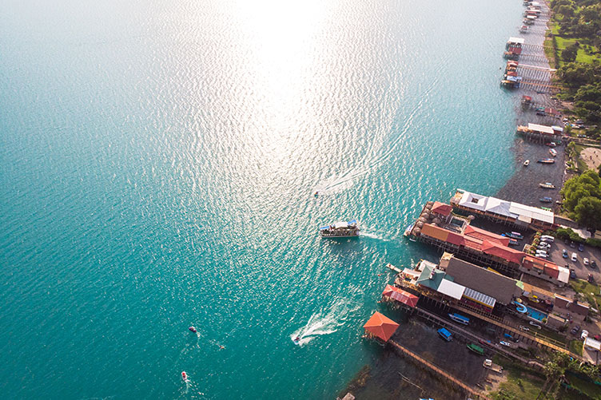
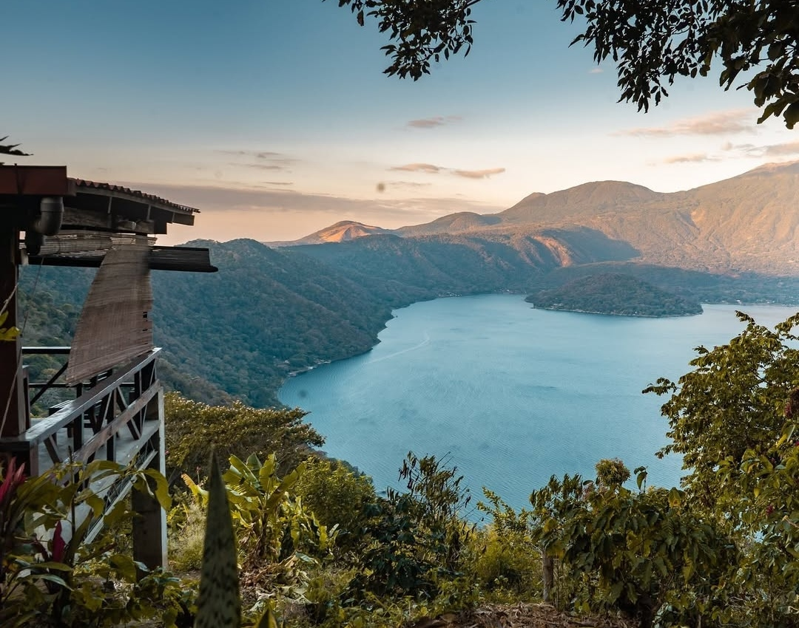
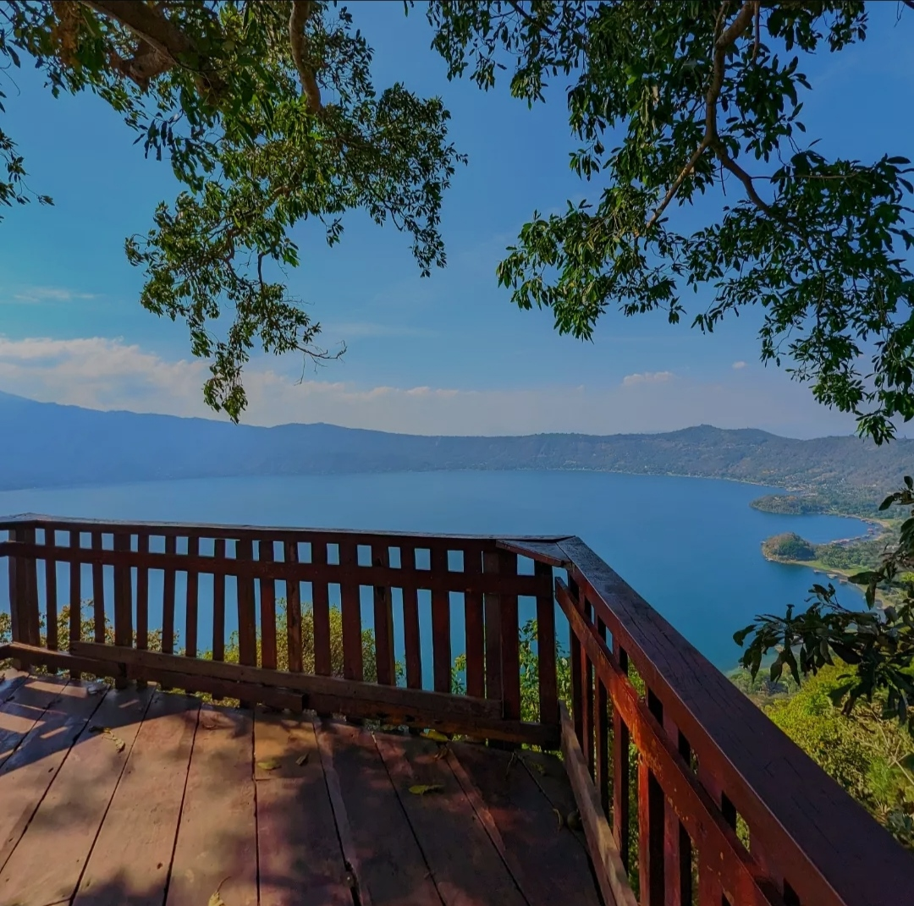
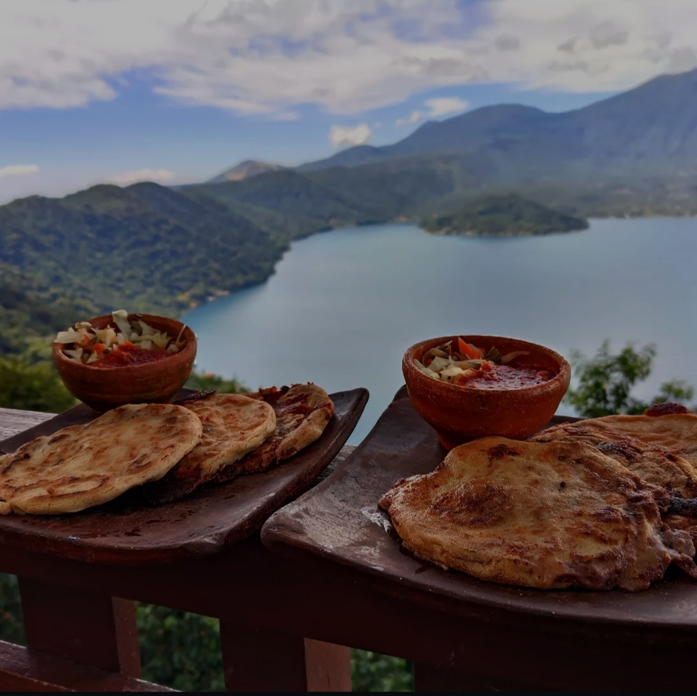
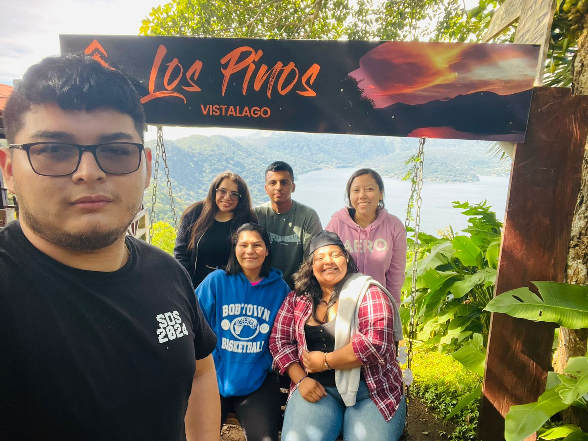

Lago de Coatepeque
Santa Ana Occidente

Tip: Perfecto para practicar kayak, jet ski y buceo.
Sus aguas azules y su alta oferta de ecoturismo hacen del lago de Coatepeque uno de los destinos preferidos por salvadoreños y extranjeros. Este lago es de origen volcánico y por su abundante riqueza natural, puedes observar una gran variedad de aves residentes y migratorias.
Además de realizar actividades como pescar, bucear o dar un paseo en lancha, en sus alrededores puedes hacer senderismo o bici montaña, logrando bellas vistas panorámicas llenas de vegetación.
Sus aguas cambian de color azul a verde turquesa de forma cíclica. Este fenómeno ha ocurrido en 1998, 2006, 2012, 2016, 2017, 2018 y 2019. Durante este tiempo, se recomienda no bañarse, pero es el momento perfecto para fotografías inolvidables.
Galería
Explora este lindo lugar y vive experiencias únicas.

Vista al Lago
Disfruta de una hermosa vista y un clima agradable en la caldera.

Mirador
Captura momentos únicos desde los puntos más altos de la zona.


Los Pinos Vista Lago
Visita este increíble lugar con servicio de hotel y restaurante de calidad.
Ver más